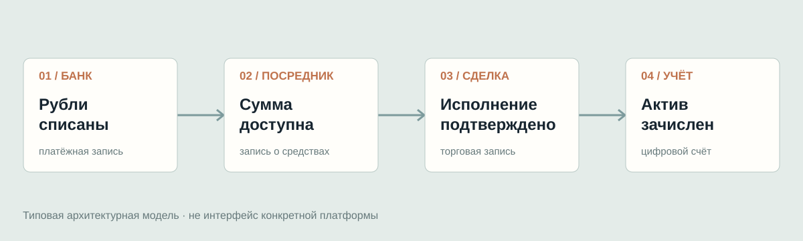

Учебная модель · Россия и практика ЕС · сведения проверены 17 ноября 2026 года
Движение показано условно. Этапы и участники зависят от правовой и договорной модели.
Контекст на дату публикации
Банк России сообщил, что организаторы торгов смогут запускать торги цифровыми валютами с 22 ноября 2026 года после согласования правил. Первые цифровые депозитарии и криптообменники были внесены в реестры в октябре. Эти сообщения не подтверждают существование единого сервиса, который уже выполняет все шаги изображённого ниже пути. Банк России, 11.11.2026 ↗Банк России, 06.10.2026 ↗
Маршрут можно проходить последовательно или открыть отдельный раздел. Каждый правовой факт снабжён ссылкой на источник.
01Объект
Первое различие
Похожая цифровая форма. Разные права.
Слово «цифровой» не означает, что три инструмента устроены одинаково. Разница начинается с вопроса: кто и что должен обладателю?
01 / цифровая валюта
Криптовалюта
В рассматриваемой модели это объект сделки и последующего учёта. У неё нет обязанного перед каждым обладателем лица, сопоставимого с эмитентом ЦФА. Цена может меняться независимо от того, насколько безошибочно выполнена операция.
Цифровой финансовый актив удостоверяет право, указанное в решении о выпуске: например, денежное требование. Здесь важны эмитент и содержание права, а не сходство интерфейса с приложением для покупки криптовалюты.
Это форма национальной валюты, выпускаемая Банком России для платежей и переводов. Банк России прямо указывает: цифровой рубль не является криптовалютой.
Дальше речь идёт именно о покупке цифровой валюты за рубли. ЦФА и цифровой рубль нужны для разграничения понятий; в путь сделки они не подставляются.
02Участники
Не одно приложение, а несколько ролей
Кто отвечает за какой шаг
Один интерфейс может объединять услуги разных организаций. Для понимания операции полезнее смотреть на действие, статус участника и подтверждающую запись.
01
Банк
Проводит рублёвую часть: счёт и перевод. Списание денег ещё не подтверждает покупку актива.
02
Брокер
Принимает поручение инвестора и направляет его на исполнение в биржевой ветви.
03
Организатор торгов
Применяет правила торговой системы, принимает заявки и фиксирует сделки.
04
Криптообменник
В другой ветви сам покупает или продаёт цифровую валюту за свой счёт вне организованных торгов.
05
Цифровой депозитарий
Оказывает услуги учёта и перехода цифровых валют либо доступа к адресам, на которых они учитываются.
Начало и конец одинаковы: рубли на банковском счёте. В середине можно выбрать один из двух способов покупки. Это типовая аналитическая схема; она не описывает работу конкретной платформы.
ШАГ 01 / 06ДО ДВИЖЕНИЯ ДЕНЕГ
Проверить участника и доступ
Инвестор устанавливает, с какой организацией заключает договор, а посредник проводит предусмотренную проверку клиента и допуска к операции.
Кто действует
Инвестор и посредник
Что проверить
Юридическое наименование и статус организации в реестре; условия доступа и результат требуемого тестирования.
РИСК ЭТАПА
Подмена сайта или начало операции до завершения предусмотренной проверки.
Как читать схему. «Заявка принята», «сделка заключена», «актив отражён на цифровом счёте» и «рубли поступили в банк» — разные события. Маршрут показывает их порядок, не предполагая единого интерфейса или мгновенного исполнения.
↘Пояснение
Видео · около минуты
Почему «куплено» — не одно событие
Короткая анимация повторяет основные переходы: деньги → поручение или обмен → сделка → запись об активе. Она помогает удержать последовательность перед разбором технологий.
Авторская анимация по типовой схеме с синтезированной озвучкой и русскими субтитрами. Полный текст расположен ниже.Прочитать полный текст видео
Инвестор начинает с рублей на банковском счёте. Банк исполняет перевод, но списание денег ещё не означает, что криптовалюта куплена.
Далее нужно проверить, что сумма отразилась как доступная для сделки у посредника. Банковский платёж и торговая заявка существуют в разных системах.
В биржевой ветви брокер передаёт заявку организатору торгов. Заявка может быть отклонена, ожидать встречного предложения или исполниться частично.
В другой ветви инвестор покупает цифровую валюту у криптообменника. Организация сама выступает контрагентом и предлагает цену или способ её определения.
После сделки требуется отдельная запись об активе. Инвестор сверяет вид и количество цифровой валюты с результатом покупки.
При продаже этапы идут в обратном направлении. Но рублёвый остаток у посредника ещё не означает завершённый вывод. Путь заканчивается после зачисления рублей банком.
04Технологии
Что скрыто за интерфейсом
У каждого сообщения свой смысл
Приложение может показывать единый экран, но операция проходит через несколько информационных систем. Для учебной модели полезно различать четыре потока данных.
01 / ЛИЧНОСТЬ
Кто совершает действие?
Регистрация, проверка личности и последующая аутентификация отвечают на разные вопросы. Подтверждённая при входе личность не освобождает от проверки права на конкретную операцию.
02 / ПЛАТЁЖ
Где находятся рубли?
Списание банком и доступность суммы для покупки необходимо показывать отдельно. Платёж должен сопоставляться с нужной операцией.
03 / СДЕЛКА
Что произошло с заявкой?
Заявка может быть отклонена, ожидать исполнения или исполниться частично. Сообщение об отправке поручения не равно подтверждённой сделке.
04 / УЧЁТ
Где запись об активе?
После сделки инвестору нужна отдельная запись о виде и количестве приобретённой цифровой валюты и понятный способ распоряжения ею.

Четыре контрольные записи в типовой модели. Каждая отвечает на свой вопрос; переход к следующей нужно проверять отдельно.
Взаимодействие систем может опираться на API и электронные сообщения. С точки зрения безопасности существенны контроль доступа к объектам, аутентификация, защита от повторного выполнения распоряжения и возможность сопоставить ответ с исходным запросом. Это архитектурная модель, а не утверждение о технологиях конкретной российской организации.
Россия и MiCA: сравниваем роли, не смешивая правила
MiCA — регламент ЕС о рынках криптоактивов. Он полезен как точка сравнения для трёх услуг: хранение, организация торгов и обмен. Российские нормы и европейские правила действуют в разных юрисдикциях. Для читателя европейские надзорные органы выпустили отдельное разъяснение о том, какие услуги охватывает MiCA и какие риски сохраняются ↗.
ВопросРоссияЕС · MiCA
Допуск участникаДля цифровых депозитариев и криптообменников предусмотрены реестры Банка России.Поставщики услуг с криптоактивами проходят авторизацию; сведения о них публикуются в реестре ESMA.
Организация торговБиржа согласует правила; Банк России сообщил о возможности запуска торгов с 22.11.2026.Статья 76 требует ясных правил и процедур упорядоченной торговли.
Обмен с контрагентомКриптообменник может покупать и продавать за свой счёт вне организованных торгов.Статья 77 требует публиковать твёрдую цену или способ её определения.
Хранение и учётЦифровой депозитарий оказывает предусмотренные законом услуги учёта и перехода.Статья 75 устанавливает правила хранения и ведения клиентских позиций.
Банк России сообщил о внесении пяти цифровых депозитариев и четырёх криптообменников в соответствующие реестры. Это конкретный факт допуска организаций. Из него нельзя делать вывод, что существует один массовый сервис, объединяющий весь путь инвестора.
Австрийский регулятор FMA сообщил об авторизации Bitpanda GmbH в рамках MiCA и перечислил разрешённые виды услуг, в том числе хранение, обмен и исполнение поручений. Это пример того, как проверять юридическое лицо и перечень услуг, а не полагаться только на бренд.
Для российского участника откройте реестры Банка России; для поставщика услуг в ЕС — реестр ESMA или сайт национального регулятора. Сверяйте юридическое наименование и именно ту услугу, которую собираетесь использовать.
Одной кнопки «Купить» недостаточно, чтобы понять сделку
На пути инвестора последовательно возникают разные подтверждения: личность проверена, рубли поступили, поручение принято, сделка исполнена, актив учтён. При продаже цепочка завершается только после фактического зачисления рублей на банковский счёт. Для каждого перехода нужно понимать, какая организация действует и какую запись можно проверить.
01
Проверьте юридическое лицо и его статус.
02
Не путайте списание рублей с покупкой и зачислением актива.
03
Отделяйте операционные ошибки от риска изменения рыночной цены.
Материал носит учебный характер и не является рекомендацией покупать цифровые валюты. Аналитическая схема показывает роли и контрольные точки, а не возможности конкретной площадки.
↗Проверка фактов
Ссылки и материалы
Источники
Использованы официальные документы и сообщения регуляторов, а также профильные материалы по цифровой идентификации и безопасности API. Ссылки проверены 17 ноября 2026 года. Веб-версия основана на ранее подготовленном реферате; сведения о текущем состоянии рынка обновлены отдельно.